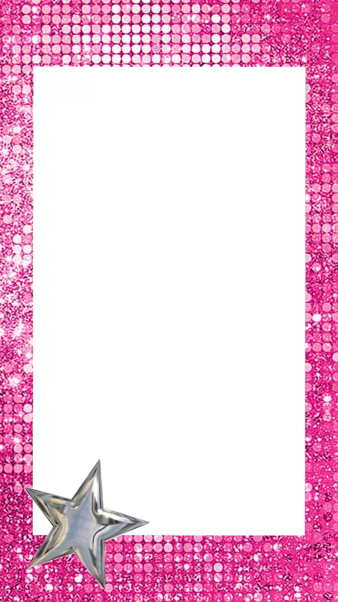
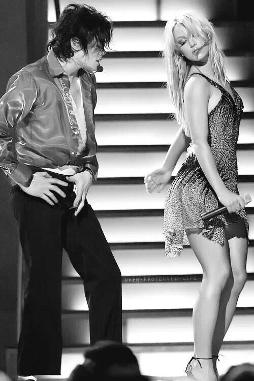
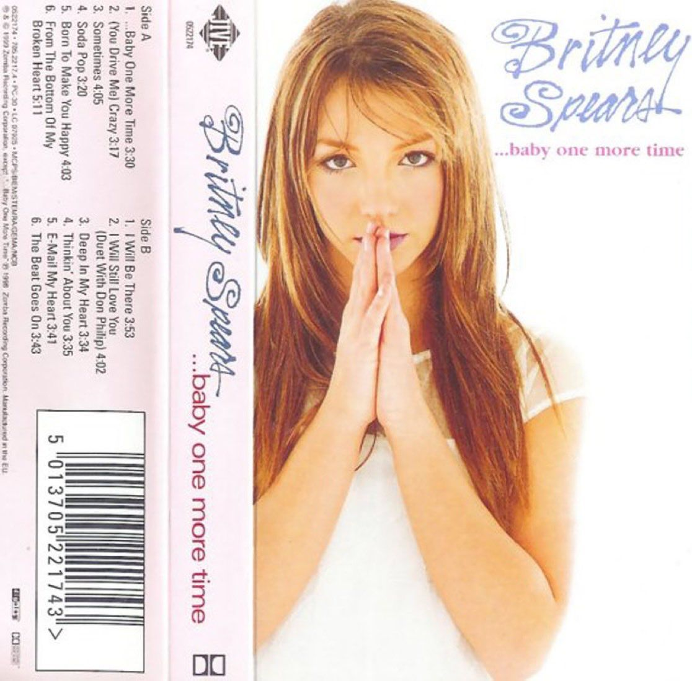
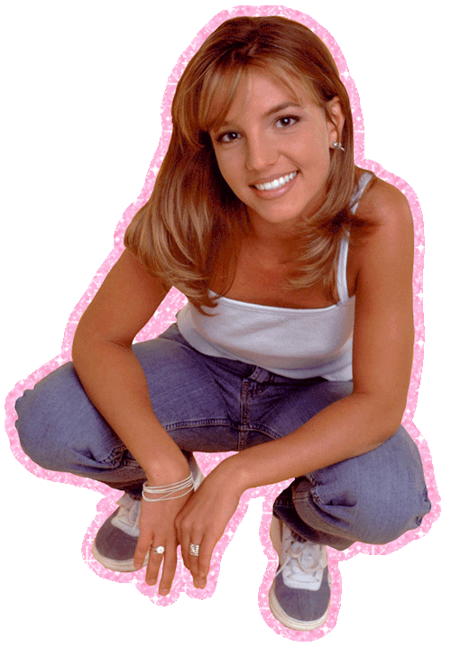

Hey, Upper East Siders, Gossip Girl here. Estamos en los 2000s, gloss, jeans de tiro bajo, MSN y rumores de celebridades. Y aparentemente el rey del pop se ha visto junto a la nueva princesa del pop.No sabes de quien hablo… busca ese iPod que acabas de comprar y toca la pista.
XOXO, Gossip Girl.


Pulsa >|| para reproducir la pista.

MENU|<>|
AÑOS 2000S
BRITNEY SPEARS

Los 2000s tenían una reina indiscutible: la princesa del pop. Con Toxic, Womanizer y Oops!... I Did It Again, dominó las listas, ganó premios y convirtió cada aparición en un acontecimiento. Porque,ella no seguía las tendencias… ella era la tendencia.
Mira uno de sus momentos mas memorables junto a MADONNA